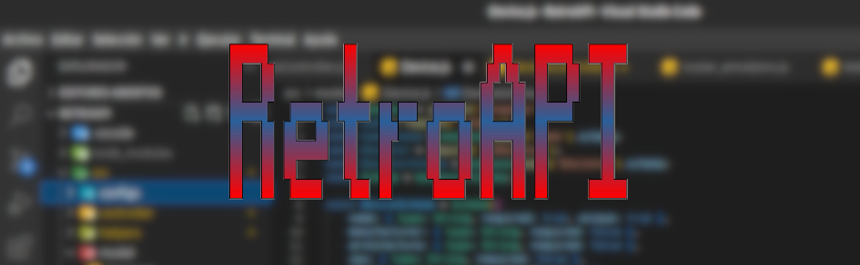

Acerca de RetroAPI
RetroAPI v1.0 - 2021
Autor: Juan Manuel Cardeso Garćia
Este programa es software libre: puedes redistribuirlo y/o modificarlo bajo los términos de la Licencia General Pública de GNU publicada por la Free Software Foundation, ya sea la versión 3 de la Licencia, o (a tu elección) cualquier versión posterior.
Este programa se distribuye con la esperanza de que sea útil pero SIN NINGUNA GARANTÍA; incluso sin la garantía implícita de MERCANTIBILIDAD o CALIFICADA PARA UN PROPÓSITO EN PARTICULAR. Lee la Licencia General Pública de GNU para más detalles.